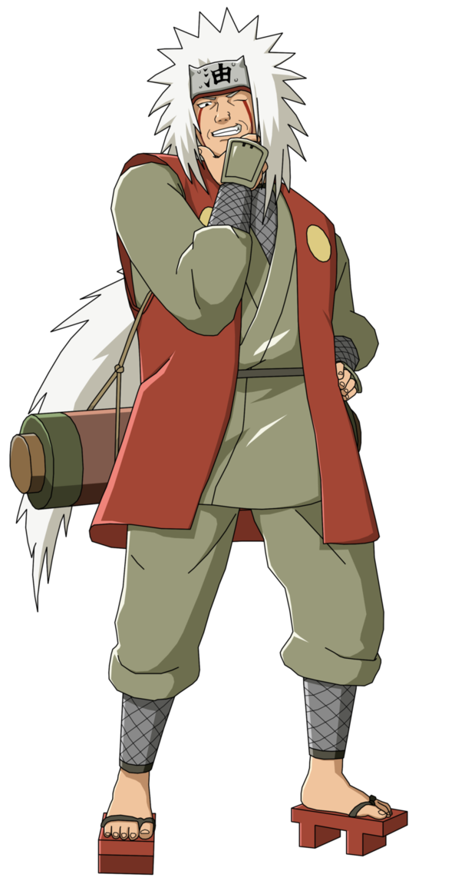
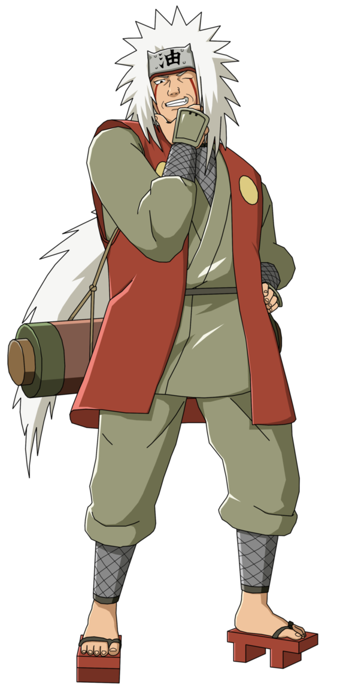
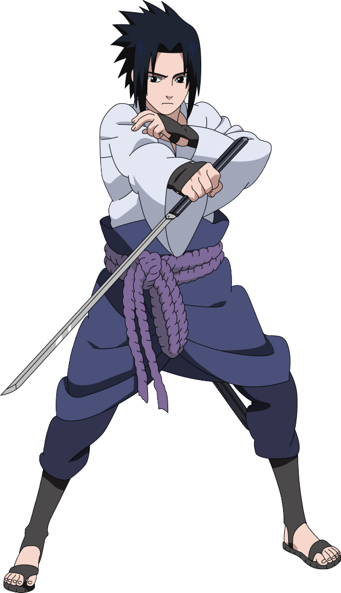
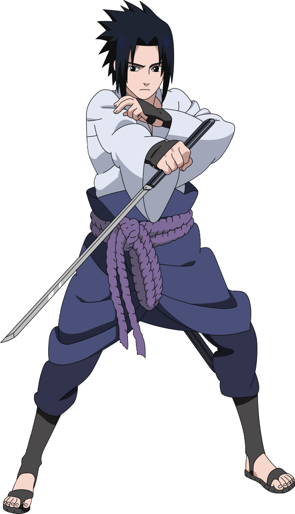
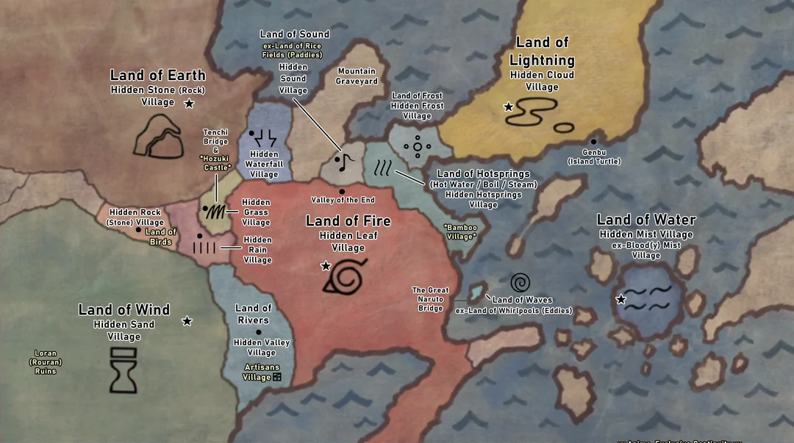

 

Shinobi Stat Showdown
Compare your favorite ninja across the three great tomes: Rin no Sho, Tō no Sho, and Shō no Sho. Choose who enters the fray by using the character list on the left.
Hover over a line to uncover which shinobi's chakra signature you're following.
Note: If a selected character does not appear in a chosen encyclopedia, their data will not be shown.

Battle Matrix
See the characters with most fights and explore the battles between any two. Click on the cell to see the battle details.